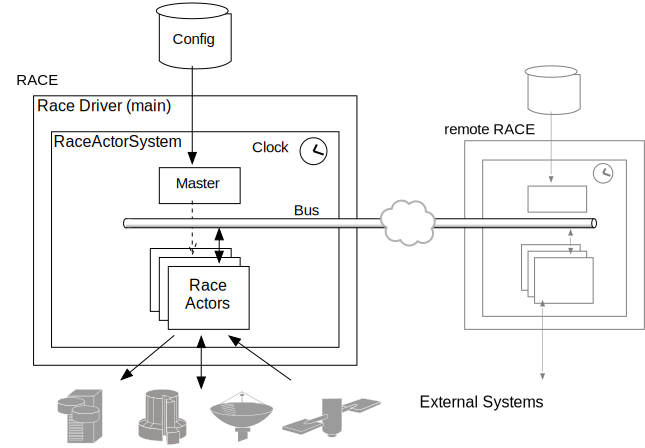

About RACE
As the name Runtime for Airspace Concept Evaluation implies, RACE was originally created as a framework to simplify building airspace simulations, but its design makes it suitable for any event based, reactive system that needs to be
- extensible - easily allows adding new components
- scalable - supports concurrent and distributed components
- heterogenous - can interface to external systems
- portable - runs on any Java supported platform
RACE itself is also meant to be accessible, it is open sourced under Apache v2 license, only depends on open sourced 3rd party components, and leverages existing technologies, formats and tools wherever possible.
RACE is not a monolythic system or standalone tool. Its main executable expects a configuration file (readable text, normally using HOCON syntax) that specifies which components a particular RACE system consists of, and how these components interact.

Although RACE systems can be composed of components that do not interact with the outside world, they typically incorporate external systems such as
- live data feeds (servers, sensors, aircraft etc.)
- hardware simulators
- foreign data distribution services (bus systems)
However, each of these external systems has to be interfaced through a dedicated RACE component.
RACE supports seamless networking between different RACE instances. This allows for systems in which certain components have to be synchronized (e.g. displays), and for system topologies in which external systems can only be accessed at a certain physical location. RACE instances can also be started and controlled remotely.
The core of RACE does not care about the specific nature of the events it processes, although it comes with support for generic TrackedObjects and Trajectories (i.e. time series for moving objects). Event processing in this context is also generic - it is up to the applications to provide and select the components that process the relevant events. While this can include distributing events to external clients via various protocols and formats RACE is not a message broker ala Kafka or ActiveMQ. RACE is a framework to build applications from clients of such event sources.
The underlying application model is a reactive, distributed, event based system. The computational model employed by RACE to process events is the well known Actor programming model, which uses dedicated objects (aka actors) that only communicate through asynchronous messages and don't share internal state. This has a profound impact on how RACE can make use of massive concurrency without burdening the developer with explicit synchronization, which is otherwise notoriously hard to design and test. Please refer to the Actors section for more details.
RACE uses the Akka library as a basis for its actor infrastructure, and hence promotes the use of Scala as the programming language to develop such actors (although Java can be used too - please see the Why Scala section for details).
The main aspects that RACE adds on top of plain Akka are
- runtime configuration of actors
- deterministic construction, initialization, start and termination of actor systems
- seamless location transparency (actors can run locally or remote without requiring code changes)
- time management (simulation clock)
- coexisting, seamless local and distributed publish/subscribe communication between actors
To achieve this, RACE employs its own RaceActors classes, which are the building blocks of
its applications. While the standard RACE distribution comes with a number of ready-to-use
RaceActors for tasks such as importing external data, this is the major extension axis of RACE.
Most real world RACE applications will add specific actors, and hence RACE was designed to minimize
the overhead that is required for developing new RaceActors.